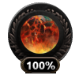
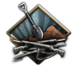
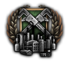

世界紧张度
原页面：World tension

世界紧张度代表世界各国之间存在的总体恐惧与焦虑程度。显示的数字可以在 0% 到 100% 之间。总世界紧张度可以高于 100%，但超过 100% 上限后没有额外效果——溢出部分反而充当应对降低紧张度事件的「缓冲」。
世界紧张度水平对玩法有若干影响，尤其是允许或限制political decisions、国策等等。它显示为一个描绘地球的图标，当前世界紧张度越高，包裹地球的火焰就越旺盛。总体而言，世界紧张度越高，各国国内对采取好战行动的支持就越普遍。
对世界紧张度的影响
世界紧张度上升
以下情况会提高世界紧张度水平：
世界紧张度下降
以下情况会导致世界紧张度下降：
- 随时间衰减（每月 0.5）
- 缔结和平条约
- 在和约中更换一个国家的政府
- 在和约中吞并自身核心领土
- 在和约中解放一个国家
- 在和约中新增非军事区

- 一个
 民主主义国家保障某国的独立
民主主义国家保障某国的独立
随时间衰减
世界紧张度是迄今发生的所有正面与负面事件之和，再减去它们的衰减。每个单独事件会以每天-0.005%[1]（即每年-1.825%）的速度逐渐衰减至 0。注意这同样影响降低世界紧张度的事件，例如和平条约会降低世界紧张度，但其效果也会像侵略性事件一样衰减。来自处于战争状态国家的世界紧张度事件不会衰减。
效果
通用效果
世界紧张度的某些效果会独立于国家的意识形态影响该国。
世界紧张度每提高一个百分点，制造战争目标的时间（与花费）就降低-0.005%，[2]在世界紧张度 100% 时最高可达-50%。
世界紧张度每提高一个百分点，也会使所有国家的战争支持度提高 +0.4%，[3]在世界紧张度 100% 时最高可达+40%。
+0.4%，[3]在世界紧张度 100% 时最高可达+40%。
某些游戏行动需要先达到最低世界紧张度水平才能采取。召唤其他国家介入一场进行中的内战至少需要达到 50%[4]世界紧张度。一些国策——主要是英国、 加拿大自治领与澳大利亚
加拿大自治领与澳大利亚 的——需要先达到一定世界紧张度门槛才能选取。
的——需要先达到一定世界紧张度门槛才能选取。
AI 玩家的许多行动同样受世界紧张度水平支配，尤其是在某个特定目标玩家已产生多少世界紧张度方面。在世界紧张度较高时，AI 更不可能接受有条件投降；AI 更不愿意与已产生较多世界紧张度的国家一起加入阵营，而更愿意对已产生较多世界紧张度的国家实施禁运。
意识形态影响
不同意识形态对世界紧张度有不同影响——既体现在产生量上，也体现在采取某些行动需要多少世界紧张度上。
紧张度要求
某些国策可以降低该门槛。以下是没有任何修正时的基础门槛。
| 操作 | 意识形态 | |||
|---|---|---|---|---|
| 制造战争目标 | - | 100% | - | 50% |
| 加入阵营 | - | 80%1 | - | 40% |
| 租借 | 50% | 50% | 50% | 60% |
| 派遣志愿军 | - | 50% | - | 40% |
| 保障独立 | - | 25% | - | 40% |
1在防御战争中上限为 50%。
 共产主义
共产主义
世界紧张度门槛修正：
- 发送租借：+50%
民主主义
民主国家不能对其它民主国家制造战争目标。
世界紧张度门槛修正：
- 制造战争目标：+100%
- 加入阵营：+80%，防御战争中上限为 50%。
- 发送租借：+50%
- 派遣志愿军：+50%
- 保障独立：+25%
 法西斯主义
法西斯主义
世界紧张度门槛修正：
- 发送租借：+50%
 中立主义
中立主义
世界紧张度门槛修正：
- 制造战争目标：+50%
- 加入阵营：+40%
- 发送租借：+60%
- 派遣志愿军：+40%
- 保障独立：+40%
降低世界紧张度门槛的修正
一个国家采取受限行动所需的基础世界紧张度由其意识形态决定（见上文紧张度要求表）。有两个国家修正会直接改变这些门槛，它们通常附带在国策、国家精神/理念以及国家领袖特质上。它们以世界紧张度的分数表示（1.0 = 100%），因此负值会把该要求lowers相应百分点。
generate_wargoal_tension
设定/改变执行justify a war goal所需的世界紧张度门槛。[5]意识形态基准为： 民主主义民主 1.00（100%），
民主主义民主 1.00（100%）， 中立主义中立主义 0.5（50%）；
中立主义中立主义 0.5（50%）； 共产主义共产主义与
共产主义共产主义与 法西斯主义法西斯主义没有基准要求。负修正会降低它——例如通用
法西斯主义法西斯主义没有基准要求。负修正会降低它——例如通用expansionist_policies领袖特质提供−0.25（所需紧张度 −25%），而许多侵略性领袖特质提供−0.5。与之配套的generate_wargoal_tension_against只对特定目标国家施加同样的偏移。
guarantee_tension
设定/改变执行保障另一个国家的独立所需的世界紧张度门槛。[6]意识形态基准为： 民主主义民主 0.25（25%），
民主主义民主 0.25（25%）， 中立主义中立主义 0.4（40%）。负修正会降低它——例如
中立主义中立主义 0.4（40%）。负修正会降低它——例如 比利时
比利时le_patron领袖特质提供−0.2（所需紧张度 −20%）。
阵营
阵营以三种方式与世界紧张度互动：成立或加入一个会增加generates紧张度，加入一个受制于joining意识形态决定的紧张度门槛，以及 AI 在决定是否接纳某个潜在成员时会权衡其已产生的紧张度。
加入阵营产生的紧张度
加入一个阵营会增加+4世界紧张度的基准值。[7]该基准值会乘以加入国的意识形态faction impact系数（以及全局NDefines.NDiplomacy.TENSION_SIZE_FACTOR = 1define，默认为 1），因此实际数值取决于谁加入：
| 意识形态 | 阵营影响系数 | 加入产生的紧张度 |
|---|---|---|
| 0.5 | +2.0 | |
| 0.1 | +0.4 | |
| 1.0 | +4.0 | |
| 0.1 | +0.4 |
这些是在 ideologies 中按意识形态定义的faction_impact_on_world_tension数值。与之类似的war_impact_on_world_tension系数（共产主义 0.75，民主/中立主义 0.25，法西斯主义 1.0）会缩放宣战所产生的紧张度。与所有紧张度来源一样，其贡献会随时间衰减（见#随时间衰减），除非该国处于战争状态。
一个以进攻方身份加入进行中战争的国家会额外产生+2世界紧张度的基准值。[8]
加入阵营的紧张度门槛
一个国家是否allowed加入阵营，受制于由其意识形态join_faction_tension修正设定的世界紧张度门槛：
| 意识形态 | 加入阵营的基础门槛 |
|---|---|
| 无1 | |
| 80%2 | |
| 无1 | |
| 40% |
1共产主义与法西斯主义不设正面要求，并且额外带有一个隐藏的join_faction_tension = -0.1修正，所以它们实际上可以自由加入阵营。2在防御战争中上限为 50%——见下文。
国策、决议、理念与顾问可以通过进一步的join_faction_tension修正来降低该门槛。
防御战争上限
当一个国家处于defensive war中时，用于加入阵营的上限变为其自身门槛与 50% 中的较低者。[9]例如，一个通常需要 80% 世界紧张度的民主国家，在防御时可以在 50% 紧张度下加入阵营。（这就是上文表格中民主国家「加入阵营」所提到的上限。）
用特工降低要求
 《抵抗运动》中，一项diplomatic-pressure特工任务可以降低目标国家加入阵营所需的世界紧张度。该要求每名特工每天下降 0.001，最多降低 20% 世界紧张度，并在没有特工派驻时衰减回原值。多名特工针对同一阵营会有递减收益（按效率等级施加 0.5 的叠加系数）。[10]
《抵抗运动》中，一项diplomatic-pressure特工任务可以降低目标国家加入阵营所需的世界紧张度。该要求每名特工每天下降 0.001，最多降低 20% 世界紧张度，并在没有特工派驻时衰减回原值。多名特工针对同一阵营会有递减收益（按效率等级施加 0.5 的叠加系数）。[10]
AI 阵营行为
当 AI 评估阵营行动时，它会把全球世界紧张度按 0.2 加权计入。[11]实际上，AI 不太愿意与已产生大量世界紧张度的国家一起受邀或加入阵营，而更愿意对此类国家实施禁运。
国策所需的世界紧张度
某些国策只有在世界紧张度高于一定限度时才能选取。其中大多数在该国处于战争状态时也变为可选。
对于拥有通用国策树的国家，如果他们不处于防御战争，「我们为何而战」需要世界紧张度高于 75%。
 阿富汗
阿富汗
 「加入轴心国」：需要 >25% 世界紧张度
「加入轴心国」：需要 >25% 世界紧张度- 「与盟国结盟」：需要 >45% 世界紧张度
- 「消灭巴基斯坦」：需要 >50% 世界紧张度
 阿根廷
阿根廷
 「宣传部」：需要 >49% 世界紧张度
「宣传部」：需要 >49% 世界紧张度
 澳大利亚
澳大利亚
 「建立咨询战争委员会」：需要 >20% 世界紧张度
「建立咨询战争委员会」：需要 >20% 世界紧张度
 英属印度
英属印度
 「省级选举」：如果不独立（没有帝国坟场
「省级选举」：如果不独立（没有帝国坟场 ），则需要 >10% 世界紧张度
），则需要 >10% 世界紧张度
 巴西
巴西
- 「宣传部」：需要 >49% 世界紧张度
 保加利亚
保加利亚
- 「加入三国同盟条约」：需要 >35% 世界紧张度
 智利
智利
- 「宣传部」：需要 >49% 世界紧张度
- 「保护复活节岛」：需要 >50% 世界紧张度
 捷克斯洛伐克
捷克斯洛伐克
 「防御准备」：需要 >10% 世界紧张度
「防御准备」：需要 >10% 世界紧张度
 加拿大自治领
加拿大自治领
 「影子工厂」：需要 >5% 世界紧张度
「影子工厂」：需要 >5% 世界紧张度- 「加拿大自治领步枪协会」：如果不独立，则需要 >15% 世界紧张度
 「加拿大防卫条例」：需要 >20% 世界紧张度
「加拿大防卫条例」：需要 >20% 世界紧张度
 丹麦
丹麦
 芬兰
芬兰
 「额外复训演习」：需要 >25% 世界紧张度
「额外复训演习」：需要 >25% 世界紧张度
「武器藏匿点」：需要 >35% 世界紧张度 「北方防线」：需要 >50% 世界紧张度
「北方防线」：需要 >50% 世界紧张度- 「独狼」：需要 >50% 世界紧张度
 「接洽主要民主国家」：需要 >55% 世界紧张度
「接洽主要民主国家」：需要 >55% 世界紧张度 「加入盟国」：需要 >55% 世界紧张度
「加入盟国」：需要 >55% 世界紧张度- 「基尔帕普尔耶赫杜斯行动」：需要 >70% 世界紧张度
- 「维罗人民」：如果不是法西斯主义，则需要 >70% 世界紧张度
 德国
德国

「大规模生产」：需要 >15% 世界紧张度- 「建立国防工业」：需要 >30% 世界紧张度
 冰岛
冰岛
 「团结则存」：需要 >5% 世界紧张度
「团结则存」：需要 >5% 世界紧张度 「宣布绝对中立」：需要 >5% 世界紧张度
「宣布绝对中立」：需要 >5% 世界紧张度- 「冰岛武装部队」：需要 >10% 世界紧张度
- 「不会袖手旁观」：需要 >15% 世界紧张度
 「政治统一」：需要 >15% 世界紧张度
「政治统一」：需要 >15% 世界紧张度
 墨西哥
墨西哥
- 「废除墨西哥割让地」：需要 >50% 世界紧张度
 荷兰
荷兰
- 「防范英国」：需要 >10% 世界紧张度
- 「德国是更大的威胁」：需要 >10% 世界紧张度
- 「进一步加强港口」：需要 >15% 世界紧张度
- 「荷兰要塞」：需要 >15% 世界紧张度
 「向和平主义宣战」：需要 >15% 世界紧张度
「向和平主义宣战」：需要 >15% 世界紧张度 「秘密参谋会谈」：需要 >15% 世界紧张度
「秘密参谋会谈」：需要 >15% 世界紧张度 「扩建库拉索炼油厂」：需要 >20% 世界紧张度
「扩建库拉索炼油厂」：需要 >20% 世界紧张度- 「南方防御」：需要 >20% 世界紧张度
- 「现代化格雷伯防线」：需要 >20% 世界紧张度
- 「与英国同行」：需要 >25% 世界紧张度
 波兰
波兰
 「加入盟国」：如果不是民主主义，则需要 >40% 世界紧张度
「加入盟国」：如果不是民主主义，则需要 >40% 世界紧张度- 「维护资产阶级民主」：如果不是民主主义，则需要 >40% 世界紧张度
- 「信任西方」：如果不是民主主义且没有 >40% 的民主主义支持，则需要 >40% 世界紧张度
- 「加入盟国」：如果不是民主主义且没有 >40% 的民主主义支持，则需要 >40% 世界紧张度
 葡萄牙
葡萄牙
 「保卫自由世界」：需要 >40% 世界紧张度
「保卫自由世界」：需要 >40% 世界紧张度
 罗马尼亚
罗马尼亚
 「米哈伊国王政变」：需要 >25% 世界紧张度
「米哈伊国王政变」：需要 >25% 世界紧张度
 南非
南非
- 「战时措施法」：如果民主主义则需要 >20% 世界紧张度
 苏联
苏联
 「工业迁往乌拉尔」：需要 >85% 世界紧张度
「工业迁往乌拉尔」：需要 >85% 世界紧张度
 瑞典
瑞典
 「宿敌再起」：需要 >10% 世界紧张度或 >8% 战争支持度
「宿敌再起」：需要 >10% 世界紧张度或 >8% 战争支持度
 英国
英国
- 对空防御：Requires >5% World Tension if 民主主义
- 「影子计划」：如果民主主义则需要 >5% 世界紧张度
 「全面重整军备」：如果民主主义则需要 >20% 世界紧张度
「全面重整军备」：如果民主主义则需要 >20% 世界紧张度- 「发放防毒面具」：需要 >20% 世界紧张度
 「军事训练法」：需要 >50% 世界紧张度
「军事训练法」：需要 >50% 世界紧张度
 美国
美国
虽然 美国的国策没有硬性世界紧张度门槛，但「两洋海军法案」与「选择性训练法案」在世界紧张度低于 50% 时需要国会更高的支持。如果世界紧张度维持低位，它也可能难以获得「巨人觉醒」所需的战争支持度。
美国的国策没有硬性世界紧张度门槛，但「两洋海军法案」与「选择性训练法案」在世界紧张度低于 50% 时需要国会更高的支持。如果世界紧张度维持低位，它也可能难以获得「巨人觉醒」所需的战争支持度。


参考资料
- ↑
NDefines.NDiplomacy.TENSION_DECAY_DAILY = 0.005中的 定义文件。 - ↑
NDefines.NDiplomacy.WARGOAL_WORLD_TENSION_REDUCTION = -0.5中的 定义文件。 - ↑
NDefines.NCountry.WAR_SUPPORT_TENSION_IMPACT = 0.4中的 定义文件。 - ↑
NDefines.NCountry.CIVIL_WAR_INVOLVEMENT_MIN_TENSION = 0.5中的 定义文件。 - ↑
generate_wargoal_tension修正。 - ↑
guarantee_tension修正。 - ↑
NDefines.NDiplomacy.TENSION_FACTION_JOIN = 4中的 定义文件。 - ↑
NDefines.NDiplomacy.TENSION_JOIN_ATTACKER = 2中的 定义文件。 - ↑
NDefines.NDiplomacy.JOIN_FACTION_LIMIT_CHANGE_AT_WAR = 0.5中的 定义文件。 - ↑
NDefines.NOperatives.OPERATIVE_BASE_DIPLOMATIC_PRESSURE_TENSION_REQUIREMENTS_DRIFT = 0.001、NDefines.NOperatives.DIPLOMATIC_PRESSURE_MAX_TENSION_REQUIREMENTS_DECREASE = 0.2与NDefines.NOperatives.DIPLOMATIC_PRESSURE_OPERATIVE_STACKING_FACTOR = 0.5在定义文件中。 - ↑
NDefines.NAI.DIPLOMACY_FACTION_GLOBAL_TENSION_FACTOR = 0.2中的 定义文件。
| 政治 | 意识形态 • 阵营 • 国策 • 理念 • 政府 • 傀儡国 • 流亡政府 • 外交 • 世界紧张度 • 内战 • 占领 • 力量均势 |
| 生产 | 贸易 • 生产 • 建造 • 装备 • 燃料 • 军工组织 • 国际市场 |
| 科研与科技 | 科研 • 步兵科技 • 支援连科技 • 装甲科技（也包括 未拥有绝不后退）• 火炮科技 • 陆军学说 • 特种部队学说 • 海军科技（也包括 未拥有全民持枪）• Naval support科技 • 海军学说 • 空军科技（也包括 未拥有以血盟誓）• 空军学说 • Engineering科技 • Industry科技 • 特殊项目 • 科学家 |
| 军事与战争 | 战争 • 和平会议 • 陆军单位 • 陆战 • 师编制设计 • 坦克设计 • 陆军编制器 • 集团军 • 指挥官 • 作战计划 • 战斗战术 • 舰船 • 舰船设计（伦敦海军条约）• 海战 • 飞机设计 • 空战 • 经验 • 军官团 • 损耗与事故 • 后勤 • 人力 • 核弹 • 突袭 |
| 间谍活动 | 情报 • 情报机构 • 特工 • 任务 • 行动 |
| 地图 | 地图 • 省份 • 地形 • 天气 • 州 |
| 事件与决议 | 事件 • 决议 |